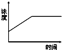
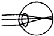
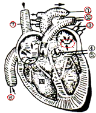

生物
//填写黑块部分
1.用显微镜观察人的血液涂片时，看到数目最多的细胞是( A )
A. 血细胞 B. 血小板 C. 白细胞 D. 红细胞
2.小明到医院看病时，作了血常规化验，结果医生告诉他可能有炎症．医生判断的依据是( B )
A．红细胞增多 B．白细胞增多C．血小板减少 D．血红蛋白减少
3.下列疾病由激素分泌异常 引起的是（ A ）
A.侏儒症 B.佝偻症 C.贫血 D.白化病
4.既是先天学习，又是人类特有的反射是( B )
A.触到尖锐物体反应缩手 B.看小说激动得泪目
C.强光直射不由自主眨眼 D.闻到食物香味犯饿
5.有关酸雨的叙述，不正确的是( C )
A、酸雨可以使土壤中的养分发生化学变化，从而不能被植物吸收利用
B、酸雨可以使河流和湖泊酸化，从而使鱼、虾等水生生物的生长和发育受到影响
C、控制酸雨的根本措施是不用煤和石油等燃料
D、酸雨直接危害植物的芽和叶，严重时使成片的植物死亡
6.下列叙述正确的是( D )
A.湖水富营养化可以使水草和藻类大量繁殖，从而通过光合作用产生大量氧气。
B.温室效应可以使全球更加温暖，有利于人类的生存。
C.我国西部实行退耕还林还草的政策是因为西部耕地过剩，森林、草地不足。
D.盲目引进外来生物很可能破坏当地的生态平衡。
7.如图表示尿素在肾脏某结构内的浓度变化情况，该结构是（ C ）
A．肾小球 B．肾小囊腔 C．肾小管 D．肾小管周围毛细血管

8..如图是小明同学的眼球成像示意图，请你判断出他的眼睛变化及纠正办法正确的是（ B ）
A．远视，凹透镜 B．近视，凹透镜C．远视，凸透镜D．近视，凸透镜

一、贫血使血液输送氧气，贫血患者应多吃一些含蛋白质和铁丰富的食物．
血液中红细胞的数量过少或血红蛋白的含量过低都叫贫血，
而含量过低使血液运输氧的能力降低
蛋白质和铁是合成血红蛋白的重要原料
二、人体的呼吸系统由呼吸道和 肺 ,其中呼吸道是气体进出通道，而 肺 是气体交换场所。

如图是人体心脏结构示意图，请据图回答下列问题．
（1）图中的“一”所指的部位是左心房，“四”所指的部位是右心室
（2）图中的①是主动脉，与心脏的[二]左心室相通，里面流动的是动脉血．
（3）⑦和⑥与心脏的[三]右心房相通，它们里面流动的是静脉血．
（4）图中的②是肺动脉，内流静脉血，③与心脏的左心房相通．